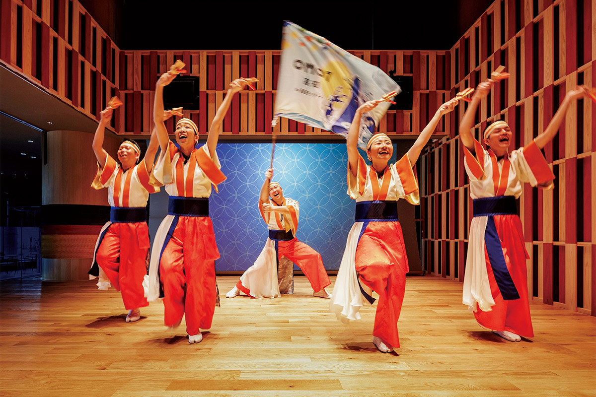
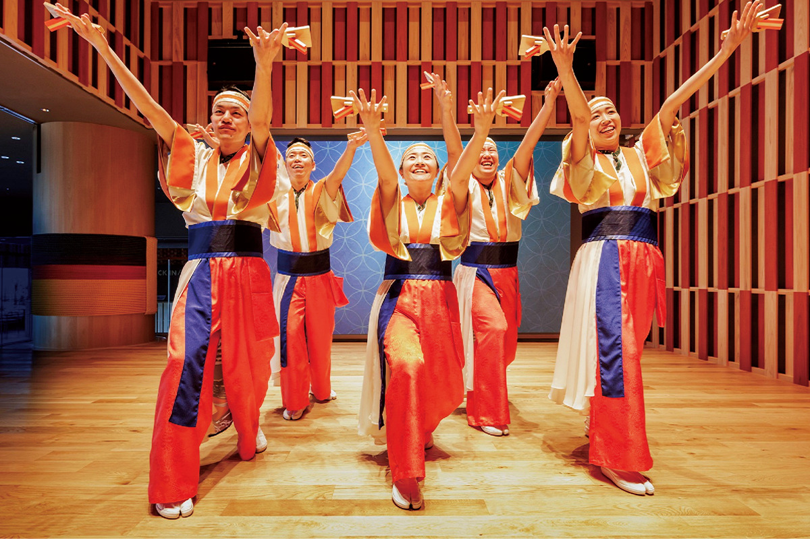
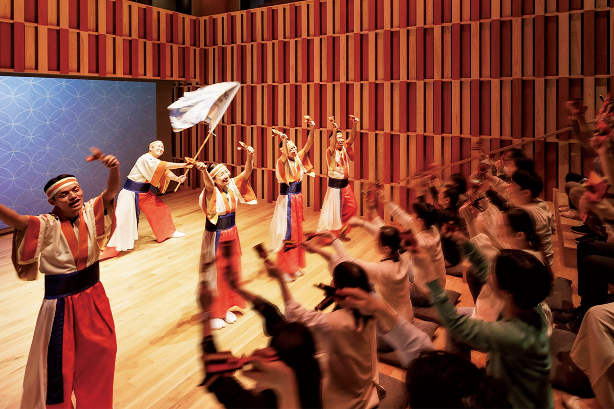
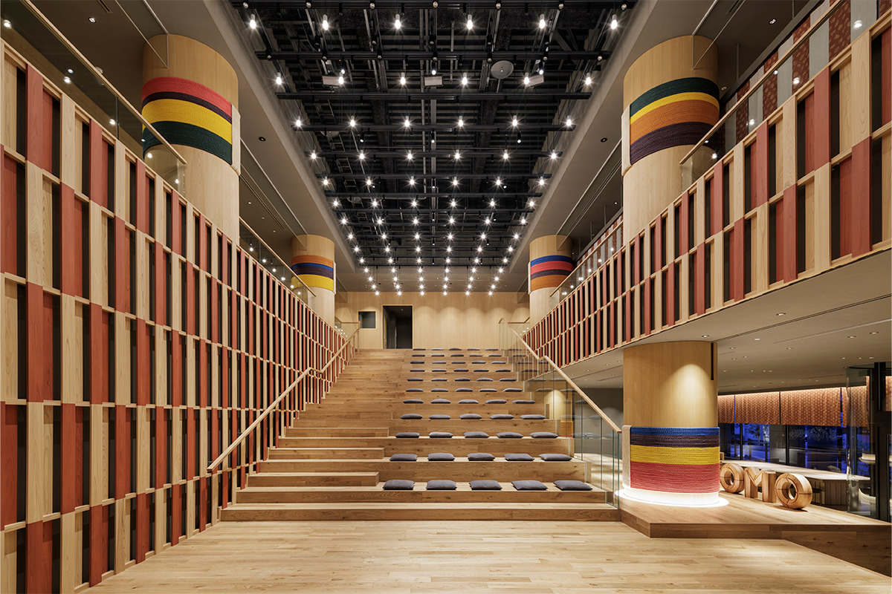
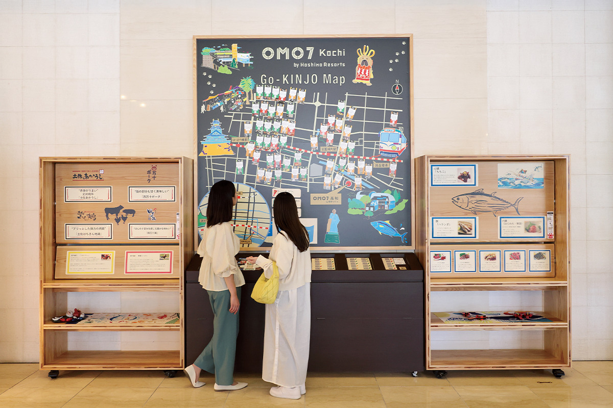
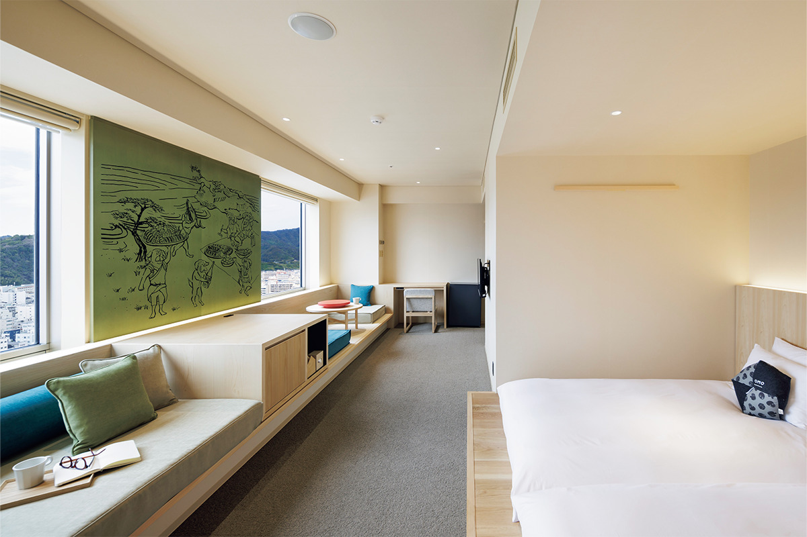
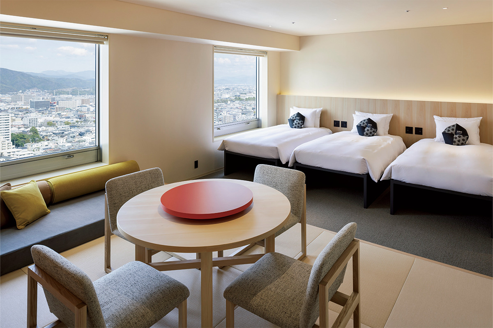
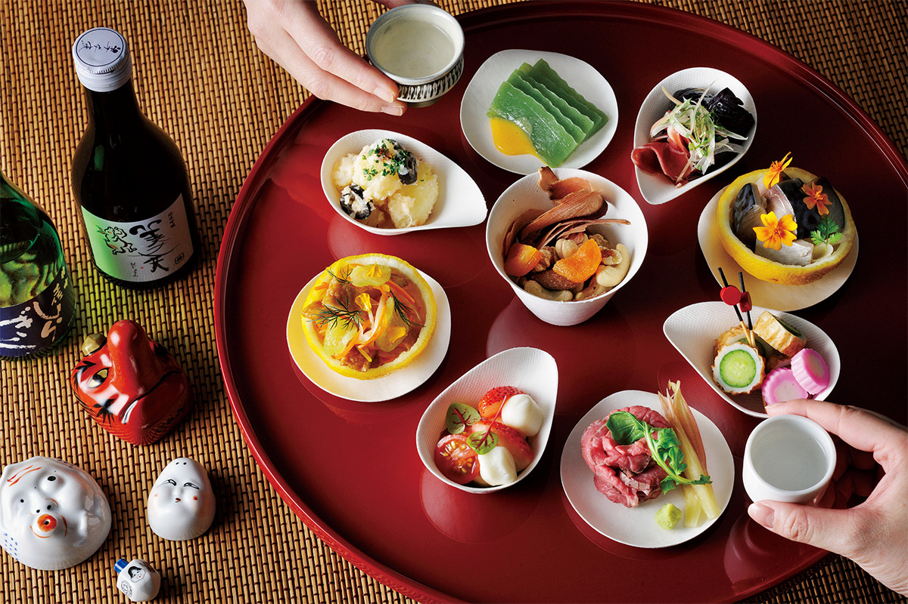

Префектура Коти · город Коти · отель и город
OMO7 Коти: вечернее шоу ёсакои и культура городского застолья

В Коти любят шумные застолья и называют их словом «окяку». Новый отель в центре города сделал это умение своей главной темой: каждый вечер здесь танцуют ёсакои, а карта соседних улиц обещает прогулку, каких не найдёшь в путеводителе.
Отель и город
Ворота в город, который любит гостей
«OMO7 Коти» это первый отель сети Hoshino Resorts на Сикоку. Он открылся в 2024 году в центре Коти, у реки. У сети OMO простая мысль: отель в центре города должен не укрывать от улиц, а влюблять в них. Сотрудники, влюблённые в свой город, и местные жители вместе устраивают так, чтобы гость незаметно для себя привязался к Коти.
Свою задачу здесь сформулировали на местном говоре: «кодзянто», то есть «вдоволь, от души», и весь девиз обещает щедрое веселье, а вечером зовёт приходить. Поэтому главное здешнее развлечение начинается с наступлением темноты.
Каждый вечер в зале идёт шоу по мотивам летнего праздника ёсакои, когда весь город пускается в пляс. Сначала танцуют под песню «Ёсакои-буси», от которой ведёт начало знаменитый танец с трещотками, потом идёт традиционная его версия, а в финале артисты показывают собственную постановку отеля и поднимают на ноги весь зал. Музыка и костюмы передают дух южной Тосы.


Второй инструмент отеля это служба «Го-киндзё»: она учит узнавать соседние улицы. В «OMO-базе» висит большая карта окрестностей, куда сотрудники сами собрали места, о которых не пишут путеводители. А на прогулку можно отправиться с «OMO-рейнджером», который знает, где наливают лучший кофе и где покупают уксус из юдзу.


Застолье
Культура «окяку»
Главное же, что здесь ценят, это «окяку»: так в Коти называют застолье, на которое собираются всей компанией. Культуру праздничного стола продолжают и в номерах. В «утагэ-сьюте» есть и нарядное блюдо с угощением, и красный круглый стол, подсказанный здешним блюдом «савати-рёри», которое подают на большом блюде. А из «утагэ-семи-сьюта» открывается красивый вид на город и горы.


Устроить застолье можно и не выходя из номера: для этого придумали набор, с которым угощение и сакэ раскладывают прямо на столе. Так за одним столом собирается вся компания, как на настоящем котийском празднике.

Прогулки
С рейнджером по воскресному рынку
А если захочется выйти в город, «OMO-рейнджер» поведёт на воскресный рынок, который называют лучшим в Японии. В программе товары с уксусом из юдзу и другие городские мелочи, ради которых стоит пройтись по рядам.
OMO7 Коти
- Адрес
- префектура Коти, город Коти, Кутанда, 9-15
- Телефон
- 050-3134-8095 (центр бронирования OMO)
- Номера
- 133
- Цены
- от 53 000 иен за ночь с двумя приёмами пищи (за номер, с налогом)
- Заезд
- 15:00
- Выезд
- 11:00
- Питание
- ужин и завтрак буфет
- Как добраться
- 15 минут на машине от развязок Коти-Минами и Коти-Тюо восточной скоростной дороги; 4 минуты пешком от остановки Саэнбатё линии Тосадэн